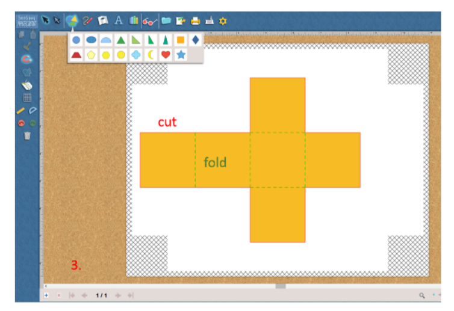
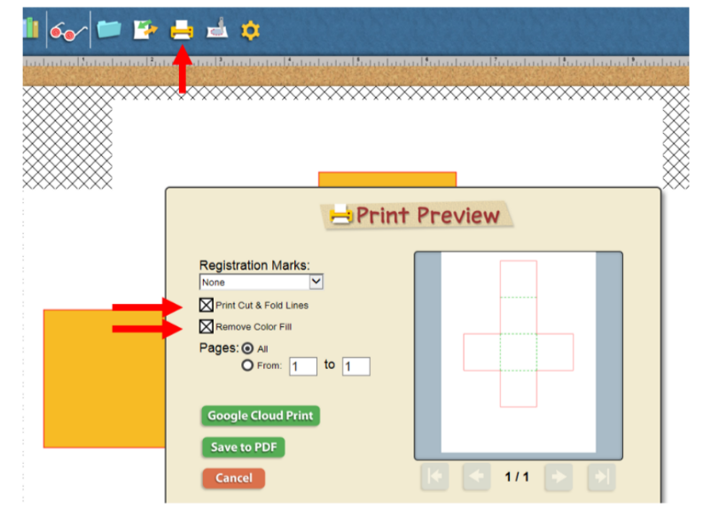
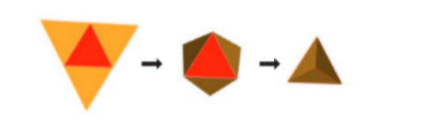
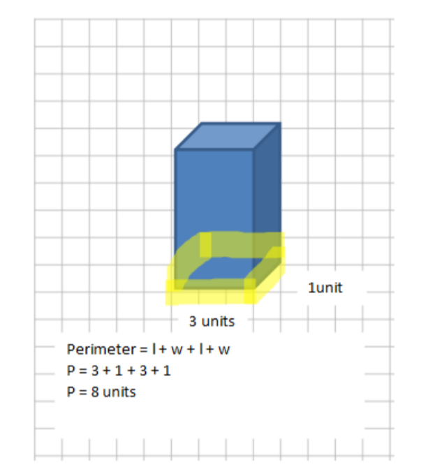
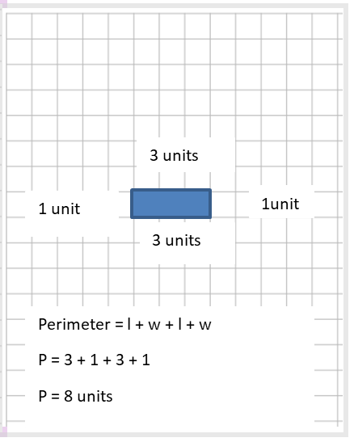

Do It! FabMaker Studio: Math-itecture
 The Challenge
The Challenge
Your challenge is to recreate a famous building, structure, or monument using 3D shapes. Use FabMaker Studio to create and print the 3D shapes then combine them to compose your famous building, structure, or monument. Then, determine the amount of security fence you need to protect the build by calculating the perimeter of your model.
Project Steps
-
Research Your Famous Building
-
Identify the 3D Shapes
-
Build the Geometric Nets
- Print and Construct the Geometric Nets
- Determine the Perimeter
Research Your Famous Building
Determine what famous building or structure you want to recreate. This could be from your state, your country, or even in another country that you are interested in. What makes the building famous? What are some reasons it will need to be protected with a security perimeter?
Identify the 3D Shapes
Determine which 3D shapes could be utilized best to recreate your famous building. This may include cubes, rectangular prisms, pyramids, spheres, or others! Be creative, as there may be more than one way to construct your model using different shapes.
Build the Geometric Nets
What 2D shapes will be in the net of your 3D shapes? Think about the 2D shapes that will make up your geometric nets.
- Your shape may be made up of multiple shapes, including rectangular prisms, pyramids, cubes, or others. Your base may be a square or rectangle in your geometric net. A 3D cube is made up of six 2D squares.
- Drag the shapes into place.
- A red, solid line will show you where to cut. A green, dotted line will show you where to fold your geometric net. If you do not see a red or green line, keep dragging your shape into place.
- If you make a mistake you can use the trash can button to undo your work or start over.
- Complete the steps for each 3D shape in your structure.

If you get stuck, check out the tutorials on the FabMaker Studio website.
Print and Construct the Geometric Nets
- Click on the print button.
- Select the options for Print Cut & Fold Lines and Remove Color Fill.
- Click Save to PDF.
- Open the PDF and print to a printer in your classroom or school.

To construct your geometric nets:
- Use scissors to cut out the geometric net along the red, solid lines.
- Fold your geometric net along the green, dotted lines.
- Tape or glue your 3D shape together.

After your construct your 3D shapes, tape or glue them together to recreate your famous building.
Determine the Perimeter
Attach your famous building to grid paper. Trace a path around your building that you would like to serve as the fence to protect your building. Either using a ruler or the grid lines for measurement, determine the perimeter around your building. Remember, perimeter can be found by adding the distance of each side around the building.
|  |  |